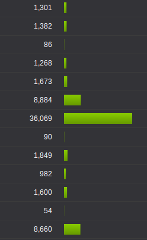
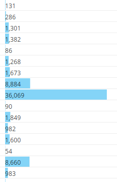

Underline doesn't take away space in a table or a list of data and by varying the length of the underline you can help readers scan much faster and get an idea of the data and its distribution without having to read each number.
Visualize data tables with variable length underlines
December 23, 2013
List
The simplest and often the best way to show a list of numbesr is to simply list them.
However, if the reader is to find the largest value she might have to go through each number, especially if all of them have the same number of digits. Sorting by the value will help, but it doesn't work if it's on a table that is sorted by some other figure.
The line height of the list in the above figure can be reduced but a similar height can be found in most software, including spreadsheets and popular BI.
Bars
Adding a bar, like a horizontal bar chart, helps you clearly identify the largest value, as well as get an understanding of the distribution without having to go through the numbers.
But it's taking up a lot of space - at least another column width or more if you want to make it aesthetically pleasing. Another problem is that it might distract someone trying to read through the numbers; of course, choosing a more subtle color will help in that.
Displaying text over bars reduces the space, but it makes it lot harder to read the numbers.
Underline
Decreasing the height of the bar to a few pixels, or even a single pixel can still give the same effect as bars. Also, you can place them underneath the numbers so that it doesn't take up an extra column.
Right aligning the bars takes away the cluttered feeling. Again, choosing a more subtle color and/or reducing the thickness of the lines will help reduce the highlighting effect.
The scale could be linear or logarithmic. A small axis could be place at the column heading to stop readers from misinterpreting.





Another JS Framework
December 17, 2013
I started working on Sweet.js about a month ago. It is inspired by Backbone.js. Sweet.js supports HTML5 states, so that you don't have to go through work arounds like these. Sweet.js is not a MVC framework, but it has a views similar to Backbone.js, which supports inheritance without affecting events and initializations of super classes. And it's written in Coffeescript.
Router
class Router extends Sweet.Router
@routes #You can add more routes from sub classes
'': 'home'
'search/:what': 'results'
home: ->
View.home()
results: (what) ->
console.log @getState() #state
View.results(what)
router = new Router()
router.start pushState: true
#Emulate browser back button
router.back()
#Whether we can go back without leaving the web app
router.canBack()Views
A generic form class.
class Form extends Sweet.View
@events
'click .cancel': 'cancel'
'click .submit': 'submit'
@initialize (options) ->
@model = options.model
cancel: (e) ->
router.back()A registration form class.
class RegistrationForm extends Sweet.View
#Register new events without affecting events registered in Form class
@events
'click .checkUsername': checkUsername
#Both initialization functions (Form, RegistrationForm) will be called.
@initialize (options) ->
@userType = options.userType
submit: (e) ->
#Submit form
checkUsername: (e) ->
#Check availabilityThis is a very basic library and it will not suit you if you are looking for a MVC. I'm using this in some of my projects, so I will be maintaining it.
I'm planning to remove the dependency on jQuery and use vanilla javascript.
Moving from Google Appengine to NodeJS on Amazon EC2
December 12, 2013
nearby.lk moved the servers from Google App engine to Amazon EC2 a couple of months back, and the backend is now built with nodejs with mongodb as the database.
Backend does a lot of pre-computations and caching which gives slower start up times and faster response times. The migration decision was based on a number of factors such as ease of development, performance and cost. There were a bunch of disadvantages of using the app engine, a several benefits of using NodeJS and some things we miss after the migration.
App Engine: the bad
Data store operations are slow
There were not many data store writes. Almost none on most days since data was uploaded in bulk. Still, the data store reads were significantly slow. To improve performance we kept most of the data in memory, which worked great until the web traffic and database size started growing.
Too many instances
App engine does load balancing for you. So when it feels like a single server cannot handle the load it creates multiple instances and balances the load. Although this sounds awesome, it wasn't for us. Pre-computations at start up kept the new instances busy, and app engine was creating more and more instances to handle this. Worst part is that multiple instances weren't actually required to handle the load, but App engine had a few instances running all the time, and we had to pay.
We tried warm-up requests to keep an extra instance running, to solve the slow start up issue, but it was not of much use.
Request Timeouts
Start up pre-computations took more than the request time limit. This made us break down the start up process into smaller chunks and run each part on different requests. That is, an instance would only be ready after a couple of requests were sent to it. Breaking the start up process was a horrible coding experience, and the worst part is that the start up is taking most of it's time reading the data store - the system would start up in within a second on my computer with app engine development server.
Memcache
Memcache helped solve the start up issue a bit, but it had a stupid 1MB size limit per entry which made things really hard for the developers. Large objects had to be broken down into pieces smaller than 1MB and if one of them was removed from memcache, everything had to be recomputed. (Search index was larger than 1MB)
Uploading and downloading data
This was literally a nightmare. bulk data uploads and downloads had to be broken down into tiny chunks because of the request time limits, and there was no way to access the datastore without writing code to do it.
Search API
We HAD to use the search API for the last few months because we couldn't keep our indexes in memory, because of the start up time (discussed earlier). You might expect the search API to be super awesome because it's Google, but it was so slow. May be we didn't use the proper design, but it was the best we could find with the documentation available.
NodeJS: the good
One language
Now the server and user interface are both in javascript, which makes it a lot easier for the developers to switch between the two.
Server-side rendering
We don't have to maintain different code to do server side rendering since we can use the same templates on both the server and client.
Portable
We can now host our servers anywhere. We are not stuck with any platform, as we were with the app engine - where we had no choice to pay more if they were to change pricing. We are currently hosted on amazon and it is running smoothly. We might switch to a larger server on amazon soon.
Speed
The start up time is much faster and requests are handled within a couple of milliseconds. We are using Nginx for all static content.
What we miss
Management Console
Appengine had a nice management console where we could look at logs, system status etc. Now we have to do it through ssh with unix commands. Although this is not a big issue for the developers, now we can't ask someone else to check or restart the servers if needed.
Ease of deployment
With app engine, all you have to do deploy is just to run a command. We need to write a small script to do this now.
Trying out new stuff
With appengine you can easily create a new account or a new version without interfering with the main system, and do beta testing or A/B testing.
So far we are so glad that we moved away from appengine and we regret that we didn't do it sooner. Development got so much easier and now we are working on stuff that actually adds value to users than hacking the system to deal with all the constraints such as memcache limits, slow datastore reads, etc.
I wish I read one of these an year ago.
Coffeescript Macros
December 9, 2013
Anyone who programs in C uses pre-processor macros to keep the code clean, maintainable and sometimes to improve run-time performance. You can use the same C pre-processor to include macros in [Coffeescript](http://coffeescript.org/) or Javascript code, and it is easy!
The coffeescript file needs to be renamed with `.c` extension before running it thrrough `gcc`; otherwise, it gives a warning and doesn't run the pre-processor. There may be some option to force it compile without checking the extension.
cp [source.coffe] [source.c]
gcc -E [source.c] > [processed.coffee]Examples
Improve performance
This is the code with macros. It compares the time taken to calculate the sum of squares, using `function`s and macros.
square = (x) -> x * x
#define SQUARE(x) (x * x)
total = 0
console.time "no macro"
for i in [0...100000]
total += square i
console.timeEnd "no macro"
console.log "Total #{total}"
total = 0
console.time "macro"
for i in [0...100000]
total += SQUARE(i)
console.timeEnd "macro"
console.log "Total #{total}"Compiled code:
# 1 "macro.c"
# 1 "<built-in>"
# 1 "<command-line>"
# 1 "macro.c"
square = (x) -> x * x
total = 0
console.time "no macro"
for i in [0...100000]
total += square i
console.timeEnd "no macro"
console.log "Total #{total}"
total = 0
console.time "macro"
for i in [0...100000]
total += (i * i)
console.timeEnd "macro"
console.log "Total #{total}"Output:
no macro: 2ms
Total 333328333350000
macro: 1ms
Total 333328333350000Debugging
You can use you favorite DEBUG macro to define LOGS, and even `LINE` and `FILE`
#define DEBUG
#ifdef DEBUG
#define LOG(x) console.log __LINE__ + ": " + (x)
#else
#define LOG(x)
#endif
n = 3
LOG("Root of #{n} = #{Math.sqrt(n)}")There is a slight problem because `#` is used for comments in Coffeescript. All you need to do is to use `##` instead of a single `#` when you want to add a comment.
#define DEBUG
##This is a comment
#ifdef DEBUG
## Define LOG macro
## Print line number
#define LOG(x) console.log __LINE__ + ": " + (x)
#else
#define LOG(x)
#endif
n = 3
LOG("Root of #{n} = #{Math.sqrt(n)}")Forestpin Lite
December 1, 2013
We are releasing Forestpin Lite, with a lot of improvements to our previous Forestpin Lite version released at the 24th Fraud Conference in June. The new version is packaged as a Google Chrome offline application and therefore runs on Windows, Mac and Linux platforms. Chethiya Abeysinghe was behind Forestpin Lite.
Forestpin Lite was developed since we felt that most auditors are using standard spreadsheet software and analyzing data manually, which is a waste of their precious time. One of the reasons to rely on spreadsheets is that auditors have access to them easily. Most risk management software are designed for large corporations and not for individual auditors/accountants; therefore those are expensive and purchase is a corporate level decision. Spreadsheets is a great tool but it is not developed with focus on analytics. So doing even a simple analysis like stratifying can be tedious.
It started as a side project, while working on Forestpin Enterprise which is our main product. Forestpin Lite was a very simple tool, intended for auditors and accountants who wanted to analyse their transaction data. We've held on to that; even as the internals of the software got complicated, we have kept the usage of the software simple.
We believe humans are much better at judgement than computers, and computers are better at doing lots and lots of calculations very quickly. It is not like in medicine where each test has a monetary cost, takes a lot of time, and is harmful for the patient; where the doctor has to think and decide which tests the patient should go through. With data analytics, the computer could do a lot of calculations in a couple of seconds. Therefore, it is better to waste a few seconds of computer-time and do all analyses instead of asking the user to decide which analysis to run and configure parameters.
Our team has tried to make using Forestpin Lite as easy as copy and paste - just paste your data and select fields and it will do all possible analyses. The user can then sit back and decide whats going on. We even try to select the fields automatically when possible and it will get better with next releases.

We have also put effort to keep it good looking unlike most accounting/auditing software out there. It wasn't hard since we don't have a lot of clutter.

Keeping this simple was not easy, and we had to make some tough decisions in doing so. Some useful features like filtering and joining tables were left out since it would complicate the software for an average user. However, we are working hard on introducing these as soon as we figure out a design to accompany them without losing the elegance.
Hear are some thoughts on what we will be working on next, and I will post some sketches soon.
- Filters
- Multiple datasets - This is when you want to compare different datasets; for example analyzing Goods Received Notes and Invoices to find if there are bad vendors.
- Multiple account types - An example would be analyzing sales data of multiple outlets, where you'ld want to know whether there are major differences in movement of a certain type of goods among outlets.
Forestpin Enterprise Redesign
November 27, 2013
We released the new version of Forestpin Enterprise last week. The new version is a complete rewrite of both the backend and UI. The backend was rewritten to be faster and to introduce a bunch of new features and analytics. The user interface was redesigned to be much more user friendly and also with focus on mobile devices such as tablets.
Teachings of visualizations experts such as Edward Tufte, Stephan Few and Naomi Robbins were followed during the user interface redesign. We have also changed the way we presented the results of analyses that existed in previous version as well. The images below are screenshots of the new version vs. the previous version and what made us make the changes.
Benford's Law Analysis

In the previous version you could only see the distribution of number of transactions for each first two digit combination, whereas in the new version we display the distribution of the sum of values by first two digits. We are using the concept of top-down graphs to show two different related values, so that the users can come to better conclusions.
For instance, with this top down display one can easily figure out that the spike in summation test at 29 (the downward orange bar) is due to a set of large valued transaction and not because there is a high number of transactions with FTD 29 (no spike in frequency distribution). Also we have colored the bars with a range of colors, unlike 3 colors in older version, to indicate the deviation. This makes it very easy to spot the red flags.
Duplicates Analysis

Many found the duplicates analysis in our previous version very useful; they also found the visualization very pretty. Still it could be improved. In the redesign, we have introduced a column on the left hand side to show the details (value, number of repetitions, average date, etc) about possible duplicated transactions. This is very useful to spot suspicious duplicates if you are familiar with numbers and the transaction values look odd. For instance, although you can infer the rough amount value from the position of the bubble you will have to select the bubble to find the exact amount.

Moreover, as you can see, we have also introduced sorting which is very useful in analysis duplicates, with our backend rewrite you can sort duplicates by different attributes almost instantaneously.
Account Based Analysis / Relative Size Factor Analysis

The above visualization shows vendors with highest relative size factor; that is vendors with unusually large payments. The graph is in log scale with bottom being the average transaction value for each vendor and top being highest transaction value; therefore, the height of the bar is proportional to the log of RSF.

With the redesign, we display results of all analysis for each vendor in a table with inline visualizations. This easily beats what we had in previous version, because now the user is presented clearly with lot more information. The user can sort by results from any analysis to quickly find the red flags.
Timeseries Analysis
This compares the predicted pattern with actual data to show whether there is a deviation. In the new version, we've taken this to whole new level with a beautiful bar graph by using color to indicate the deviation. With this design even someone with absolutely no knowledge of the dataset would be able to identify the troubling months.